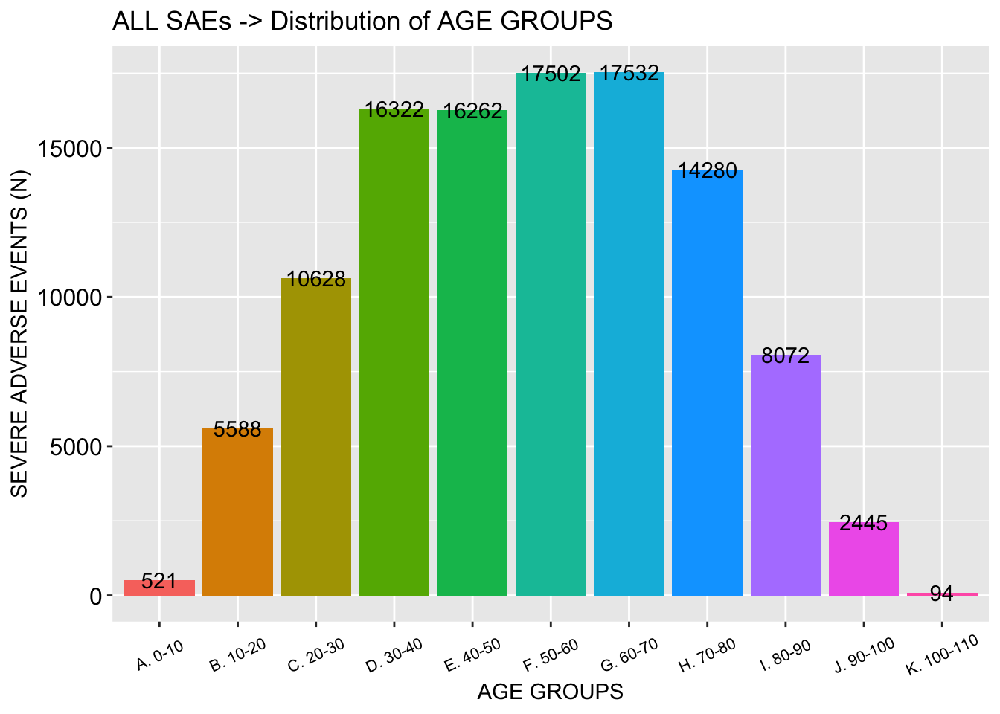
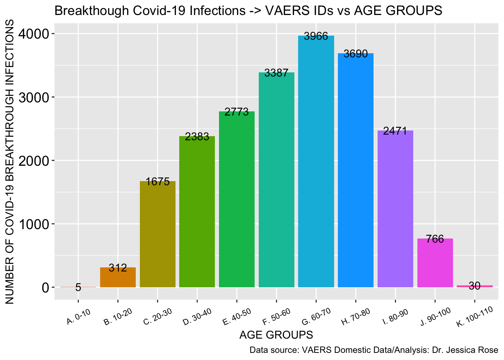
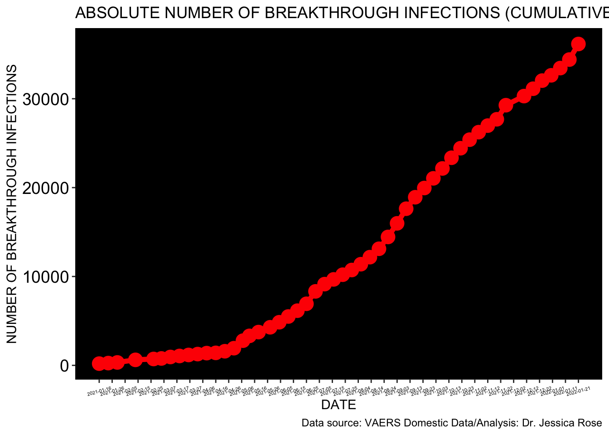
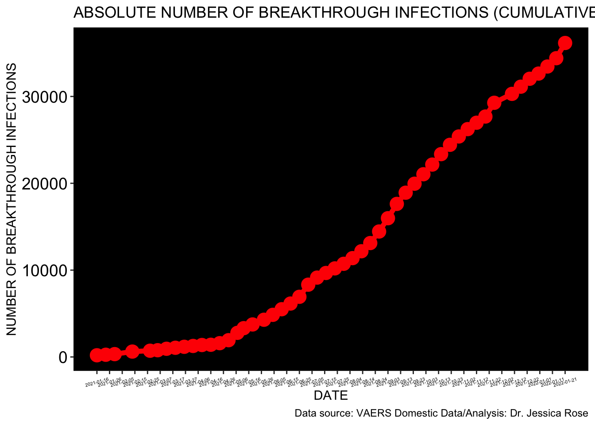

This is an R Markdown sheet generated from the VAERS data. I included some code but for the most part, only figures are shown. I decided to show figures pertaining to Death, Spontaneous abortions, Breakthrough COVID-19 infections and Cardiovascular, Neurological and Immunological adverse events.
I start by coalescing the .csv files downloaded from the VAERS website: https://vaers.hhs.gov/data/datasets.html
## [1] 388900
## [1] 5163## [1] 22612## [1] 52399## [1] 66769## [1] 17.16868BAR PLOT FOR SAE COMPARISON TO STANDARD
## Percent_SAE SAE PERC
## 1 Standard 58000 15
## 2 Actual 66769 17 BREAKTHROUGH COVID19 CASES
BREAKTHROUGH COVID19 CASES
## [1] 9442


## [1] 5351






 



## [1] 14828
 ```
```